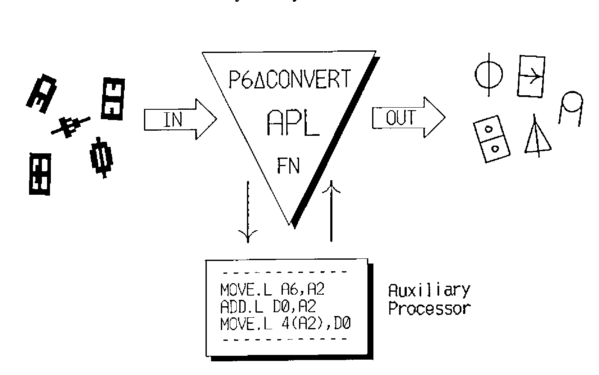

APL Printing from APL.68000
Vector 6:1, page 127
Transcribed from the printed issue; not yet reviewed. Read it in the PDF of the issue, page 127

Abstract¶
This article describes an APL font, an auxiliary processor, and associated functions for printing from within APL.68000 to a 24-pin dot matrix printer.
Introduction¶
APL is an intellectual tool. Until something better comes along it is the only computer language which lets one program almost fast enough to avoid hindering one’s thought processes, and still allow unlimited flexibility. The perfect development environment for APL is undoubtedly a WIMPS system, and a few enlightened hardware manufacturers (such as Commodore, Atari and Apple) produce such systems at affordable prices. Thanks to MicroAPL we now have an excellent APL for the Amiga, Atari ST and the Macintosh, lacking only nested arrays (which remain controversial) and good printer support. The latter I have attempted to put right myself, by developing a set of utilities on the Amiga which are also portable to other systems. I am donating the results of my work to the BAA Software Library on a disk to which this article can be considered the documentation.
Method¶
The first step was to get an APL font for my printer. Since I was unable to find one (well, not a free one anyway!) I created my own using a font designer which I had written in APL. The program was inspired by an article in MicroAPL News on editing bit maps on the Macintosh. With the font installed and selected, the printer could be made to emulate a normal APL device, provided that only standard APL characters were printed (including backspace) and that no attempt was made to switch character sets. I was now able to use the ⎕HC system function to obtain a continuous hard copy of the screen.
What I really wanted though, was an APL function which could print any APL text variable directly to the printer, including all characters in the atomic vector. This is a feature missing from the current version (6.04C) of APL.68000 for the Amiga, regardless of the type of printer you have. The function would have to do two things; first translate the character codes and resolve overstrikes, then send the output to the printer via DOS. The second part of the operation is system dependent, so in order to increase portability, and following the ideal of one job per function, I decided to separate the two processes. The first part was written as an auxiliary processor in assembly language (for speed) and should work on any 68000 based system. The second part was written in APL using DOS functions provided by MicroAPL in a utilities workspace. Since these functions appear to have their counterparts on other systems conversion should be easy.
All that remained then, was to write a few simple functions for initializing and selecting options on the printer, and one to return the vector representation of a function to be printed. The latter was needed because in APL.68000 there is no ⎕VR system function.
The Font¶
A sample display of the font was published in Vol.5, No.3 of Vector (page 110), however the non-APL characters shown there were actually from the resident character sets of my printer; the NEC P6. For the font I have redefined all characters with ASCII codes in the range 32 to 127, with the exception of space and the digits 0 to 9 which occupy the same position as their non-APL counterparts. Overstrike characters are obtained in the traditional way by back-spacing, and don’t seem to inconvenience the printer at all.
I have included a listing of the dot patterns for each character in the font in a file on the BAASL disk so that anyone whose printer is incompatible with the NEC P6 can easily edit and adapt the font. It will be necessary to write a small program to do this of course, and the format of the file for each character is as follows:
Line 1: decimal ASCII code of the character (32 to 127).
Line 2: LEFTSPACE, WIDTH, RIGHTSPACE (measured in dots).
Lines 3 to 26: dot pattern (24 lines by WIDTH columns).
The sum of the values in line 2 is always the same in order to ensure that overstrikes are properly aligned, even if proportional spacing has been selected. The font data resides in the workspace in a global integer vector called P6∆APL∆FONT∆DATA.
The P6∆CONVERT function¶
This is a cover function for an auxiliary processor which takes any character variable, including high order arrays, and returns a character vector of ASCII characters to be sent to the printer in order to print that variable as it would appear on the display. For the sake of flexibility, P6∆CONVERT ignores the print width setting and does not append a terminating carriage return.
P6∆CONVERT uses the resident character sets in the printer as far as possible, inserting control sequences to select national character sets where necessary. The assembly code for the auxiliary processor resides in a global integer vector called P6∆CONVERT∆AP∆CODE and is referenced by the cover function.
The WRITEDOS function¶
This function sends character data directly to a DOS file or device without any conversion taking place.
∇ R←DOSFILE WRITEDOS DATA;TIENR
[1] ⍝∇ Writes character data to an AmigaDOS file or device.
[2] ⍝ Right argument is data (any format).
[3] ⍝ Left argument is AmigaDOS file spec (char vector or scalar).
[4] ⍝ Returns AmigaDOS error code (integer scalar).
[5] ⍝ Uses AMCREATE, AMTIE, AMUNTIE & AMWRITE from workspace AMFILE.
[6] TIENR←1 ⍝ File tie number.
[7] ⎕ERS(4≠⎕DR DOSFILE)/11 ⍝ File spec must be characters.
[8] ⍎(0=⍴⍴DOSFILE)/'DOSFILE←,DOSFILE' ⍝ Deal with scalar.
[9] ⎕ERS(1≠⍴⍴DOSFILE)/4 ⍝ No arrays.
[10] DATA←,DATA ⍝ Make data a vector.
[11] ⍎(4≠⎕DR DATA)/'DATA←4 ⎕DR DATA' ⍝ Make it characters.
[12] →(0=R←TIENR AMTIE DOSFILE)/GOTFILE ⍝ Tie AmigaDOS file.
[13] →(205≠R)/0 ⍝ Quit unless error = FILE NOT FOUND.
[14] →(0≠R←AMCREATE DOSFILE)/0 ⍝ Create AmigaDOS file.
[15] →(0≠R←TIENR AMTIE DOSFILE)/0 ⍝ Tie AmigaDOS file.
[16] GOTFILE:
[17] →(0≠R←DATA AMWRITE TIENR)/0 ⍝ Write out data.
[18] R←AMUNTIE TIENR ⍝ Untie file.
[19] ⍝∇ <AMUTILS> by Iain Hayward, 22Apr89.
∇
WRITEDOS is used for downloading the font data and for sending control codes to the printer. It could be used to write out the font data to a DOS file which is then copied to the printer as part of the startup sequence.
The left argument to WRITEDOS is a character vector containing the AmigaDOS output device or file specification. In my case this is the parallel port device "PAR:". I use it in preference to the printer device "PRT:" because the data may contain characters which are interpreted by the printer driver as a control sequence. "SER:" should be used by anyone whose printer is connected to the serial port. The right argument to WRITEDOS is the data to be written and would normally be a character vector, although any other type of variable is accepted and converted to bytes.
WRITEDOS returns an integer scalar containing an AmigaDOS error number. Normally this is zero indicating no error, but if any other value is returned then something is wrong, and an explanation can be obtained either by calling the AFE function in workspace AMFILE, or else by looking up the error number in the AmigaDOS manual.
The PRINT function¶
This is really just a cover function for printing in APL which can be customized to suit your own environment and preferences. It calls P6∆CONVERT to convert the data and then WRITEDOS to send it to the printer. The example below specifies the printer device, formats numeric data, and appends a terminating newline character.
∇ R←PRINT INDATA;OUTDATA;MYDEVICE
[1] ⍝∇ Prints APL data on a NEC P6 printer with downloaded font.
[2] ⍝ Right argument is data to be printed (any format).
[3] ⍝ Returns AmigaDOS error code (integer scalar).
[4] MYDEVICE←'PAR:' ⍝ Printer device specification.
[5] ⍎(4≠⎕DR INDATA)/'INDATA←⍕INDATA' ⍝ Convert numeric to text.
[6] OUTDATA←P6∆CONVERT INDATA ⍝ Translate codes for the printer.
[7] ⍎(⎕L≠¯1↑,INDATA)/'OUTDATA←OUTDATA,P6∆CONVERT ⎕L' ⍝ Append a newline?
[8] R←MYDEVICE WRITEDOS OUTDATA ⍝ Send it to the printer.
[9] ⍝∇ <P6UTILS> by Iain Hayward, 22Apr89.
∇
Initialising the Printer¶
I have created a function called INITPRINTER to download the APL character font and to modify some of the printer settings. It takes one argument which is an integer vector of print options. The vector currently contains only two elements, the first being the width of the left margin in columns, and the second a boolean flag to indicate whether to select or cancel proportional spacing. The function can easily be extended to take other options, but it is wise to select all options before downloading the font. I have found that function listings look best with proportional spacing on, especially if they contain a lot of comments, but for printing arrays of data it is best to turn this off so that the columns line up. INITPRINTER reports its progress as in the following example:
One should allow a few seconds for the font data to be downloaded, but make sure that the printer is on-line and has paper loaded, or INITPRINTER may hang.
Writing the AP routines¶
There is a small section at the back of the APL.68000 Language Manual which describes the auxiliary processor mechanism. This gives most of the information needed to write a machine code routine to be accessed via AP 1, but it still leaves a few questions unanswered. In particular there are no examples, and no description of the format of a symbol table entry. MicroAPL do not provide a toolbox of low-level routines either such as is available for Dyalog APL, but I suspect that all of their functions are custom-coded for speed. Fortunately MicroAPL were very helpful here, promptly answering my queries, and even sending me a listing of the source code for an example auxiliary processor.
The code for an auxiliary processor is stored in an APL variable and must be position-independent so that it can be moved anywhere in memory and still work. For development of the routines I used the excellent German "Profimat" assembler which has an option to convert instructions into their PC-relative form as far as possible, and to report an error where this is not possible. The object code was loaded into a variable using DOS utility functions from the AMFILE workspace, and then converted to integer format so that it does not corrupt the screen if displayed.
For anyone interested in writing auxiliary processors I am planning an article on the subject for a future edition of MicroAPL News.
Portability¶
The APL functions and the auxiliary processor were written for APL.68000 and should work on any system based on the 68000 processor. It will be necessary to modify the WRITEDOS function to use the DOS utility functions (listed in line 5) which MicroAPL has provided for that system and to change the DOS error return code in line 13 (I believe it is 33 for the Atari ST).
To use the software with printers incompatible with the NEC P6 it will be necessary to modify the font and/or the auxiliary processor. For the benefit of anyone wishing to do this I have included a machine readable version of the font (see above) and the source code for the auxiliary processor on the BAASL disk.
Copyright Note¶
One or two colleagues have drawn my attention to the commercial potential of this software, and indeed I can see that it might be of some value to a business using APL. However it is my wish that it reaches the hands of people who can’t or wouldn’t pay for it; typically home computer users and people in education. I am giving it away in order to help and encourage amateur users of APL.
I would like to make it quite clear that these utilities and the font are going into the public domain, that they are available free, and that I retain all rights. They may not be distributed as, or as part of, a commercial product.
Iain Hayward
280A rue de Neudorf
L-2222 Luxembourg
G. D. of Luxembourg